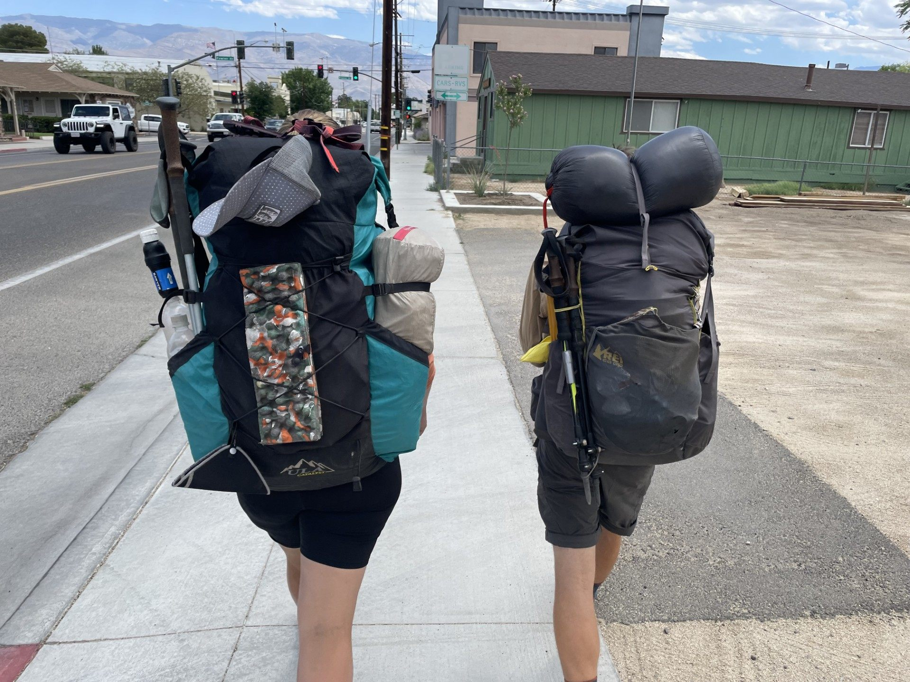
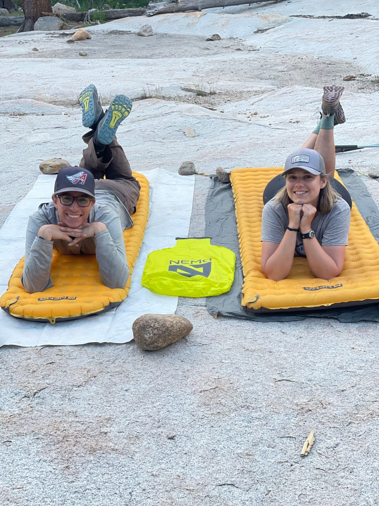
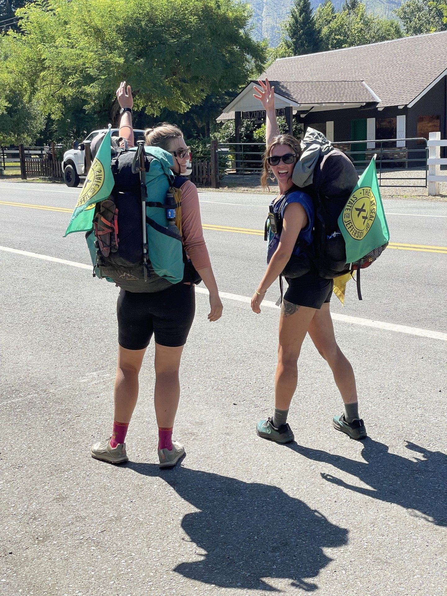
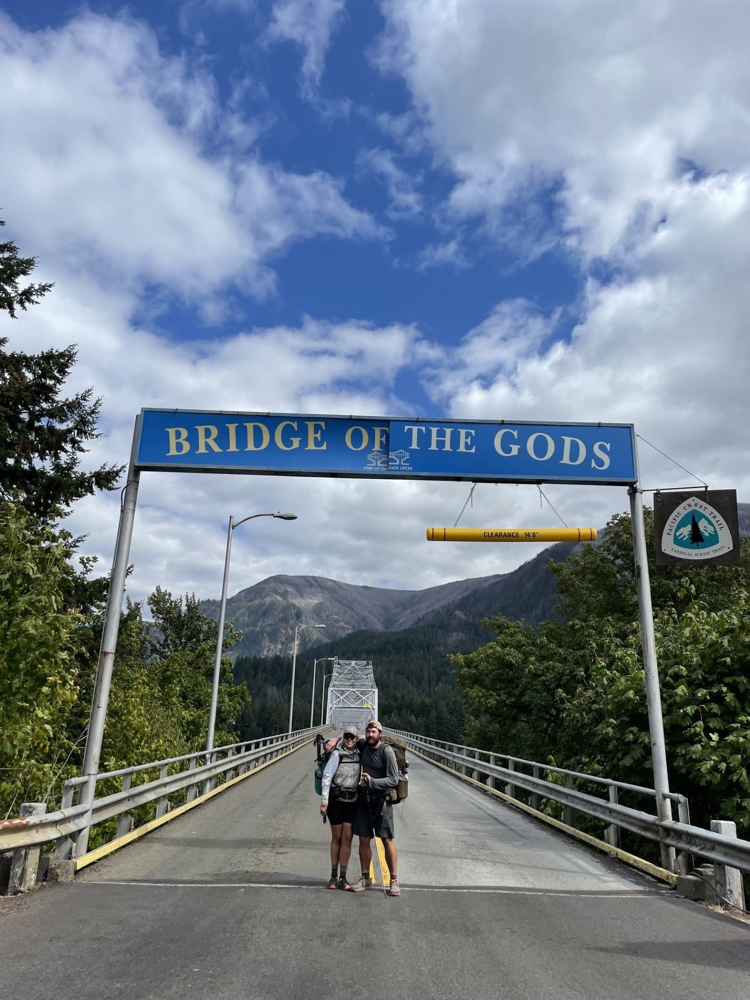
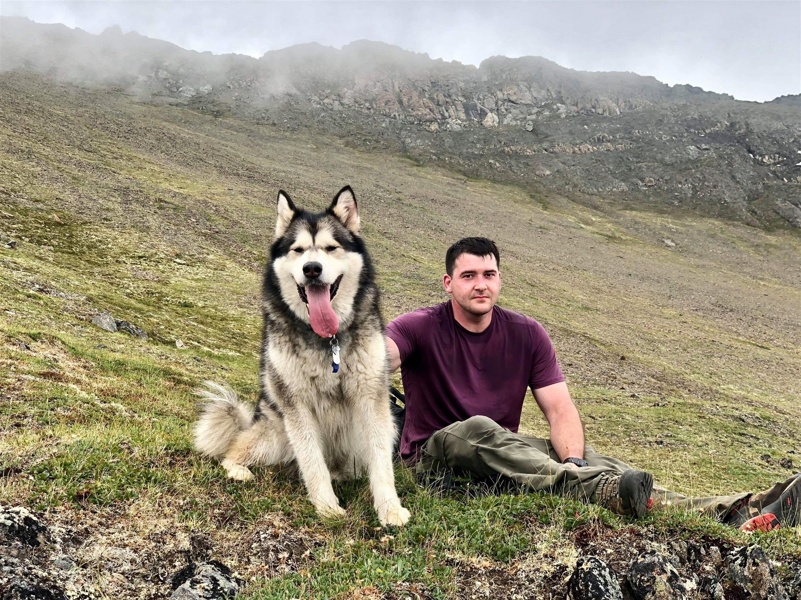
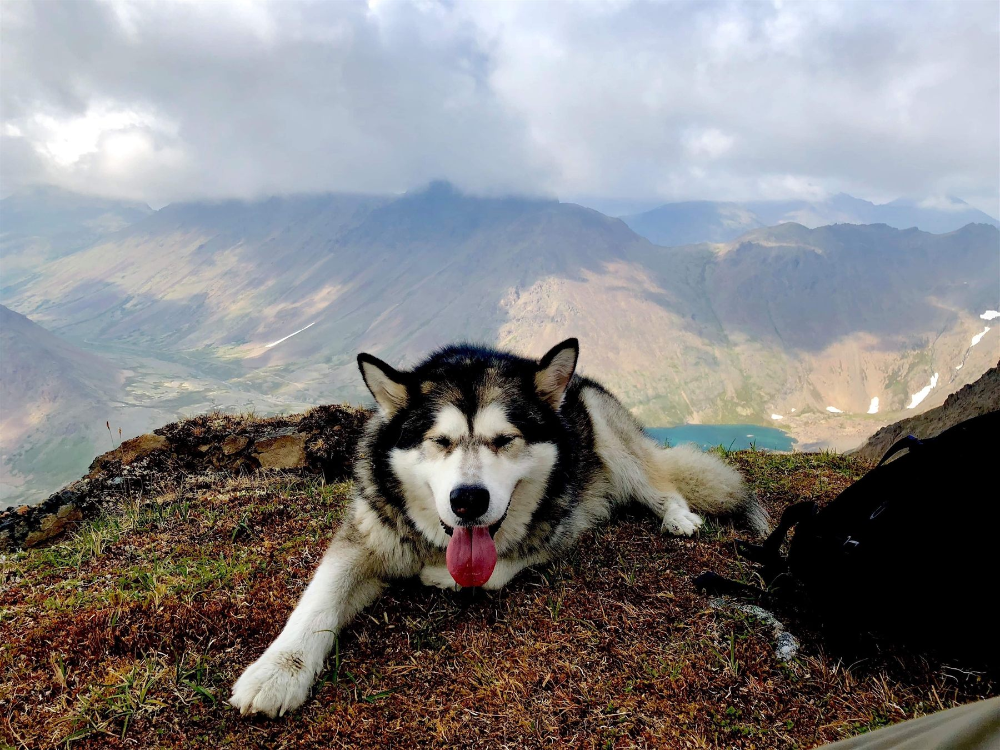
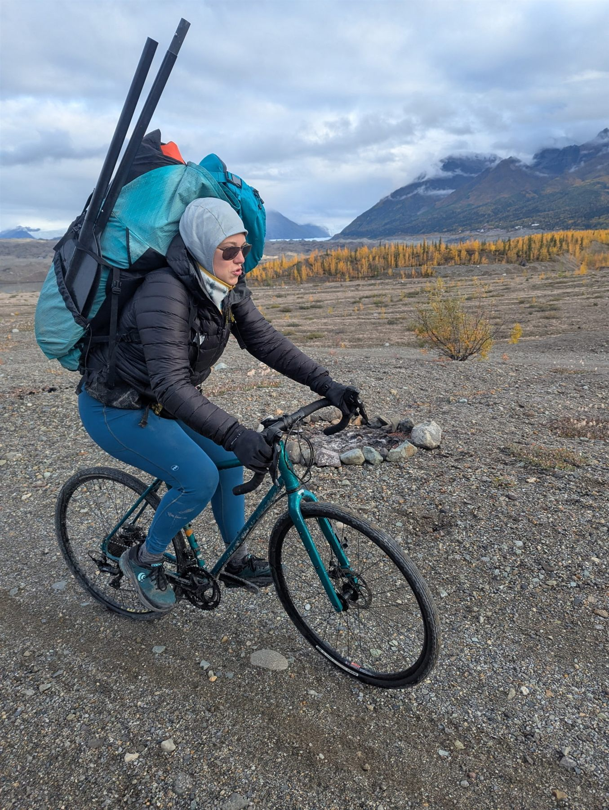
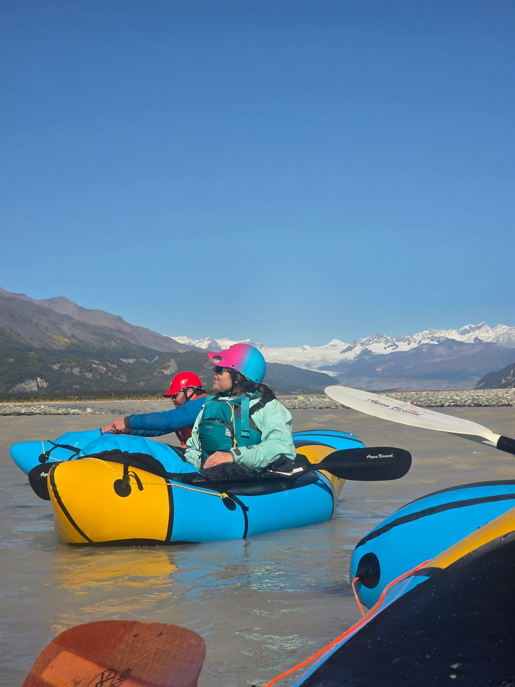
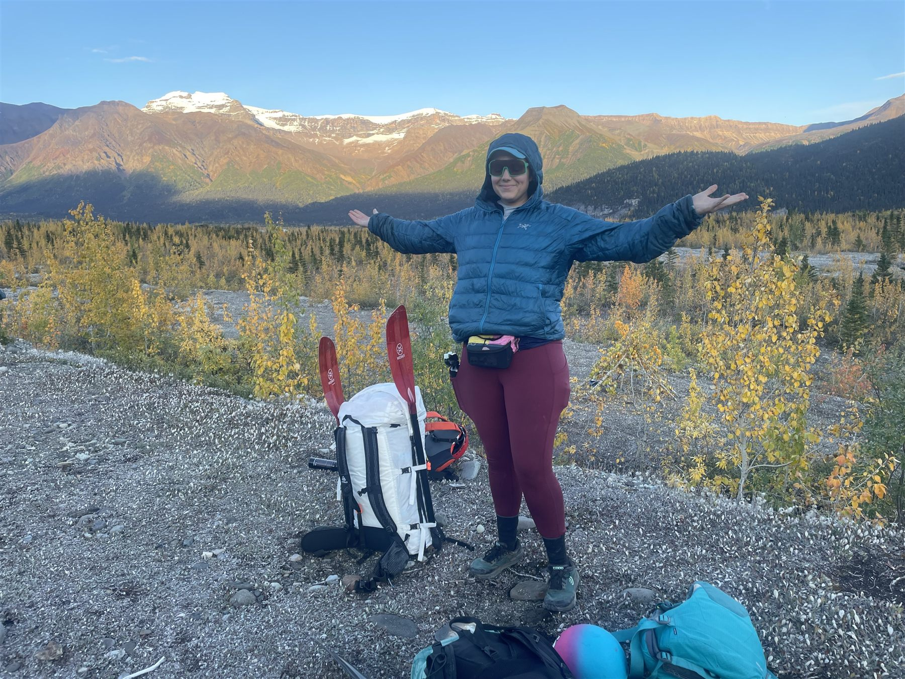
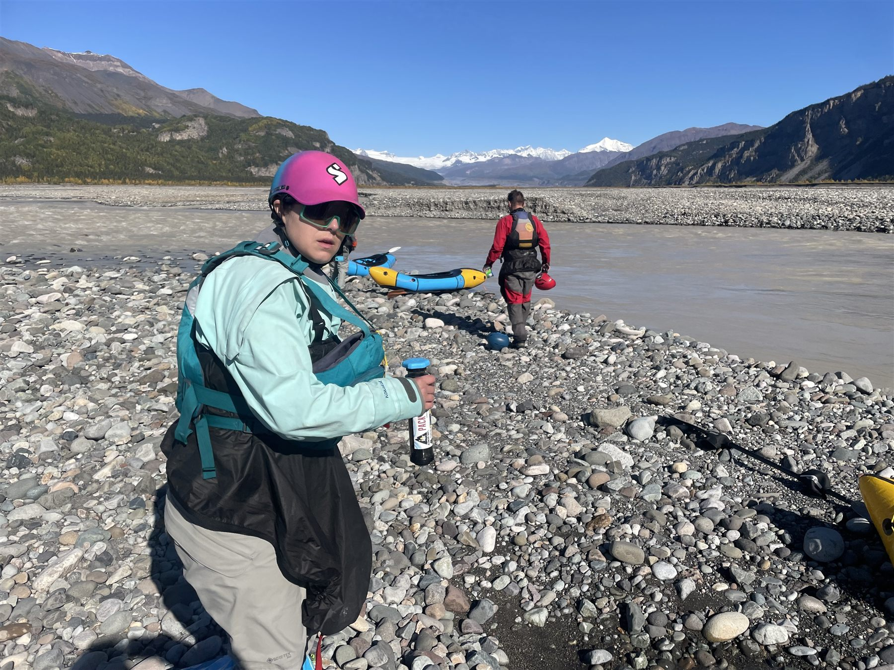

Nous nous marions
Notre Histoire
-
Comment nous nous sommes rencontrés
Du côté de Joel
Noëlle et moi nous sommes rencontrés en 2021, quand notre goût commun pour l'aventure et le plein air, et une incapacité partagée à garder un emploi à temps plein, nous ont poussés tous les deux à parcourir le Pacific Crest Trail. Nos chemins se sont croisés vers le 600e mile, juste avant la Sierra Nevada — et nous avons fini le reste du sentier ensemble. Enfin, presque : quelque part dans les Sierras, Noëlle a décidé de faire la grasse matinée un matin, ne m'a jamais vraiment rattrapé, et m'a laissé marcher seul pendant les deux semaines suivantes.
Ce qui a commencé comme une belle amitié et un partenariat de randonnée étonnamment efficace a fini par devenir de l'amour — même si on ne le devinerait jamais à voir la première photo que j'aie prise d'elle.

Il m'a fallu encore un peu de temps avant de prendre des photos où l'on voyait vraiment son visage.

Quelques autres photos de cet été sur le sentier :








Après avoir atteint la frontière canadienne, nous avons chacun repris le chemin de Boston — et quelque part dans tout ce temps passé ensemble, l'amitié est devenue quelque chose de plus. Incapables de retenir la leçon, nous avons ensuite traversé le pays à pied ensemble une seconde fois, avant de troquer définitivement le sentier contre l'Alaska.
À l'automne 2023, nous étions de nouveau sans domicile et sans emploi — mais cette fois, nous savions que Boston n'était pas l'endroit où nous voulions nous poser. Par chance, mon frère Robin était sur le point d'être déployé et cherchait quelqu'un pour garder sa maison (et son chien) en Alaska. Nous avons donc fait le saut : un retour en Alaska pour moi, et un grand bond dans l'inconnu pour Noëlle, qui n'avait en fait jamais mis les pieds en Alaska (Sitka ne compte pas). Mais aussi important que le déménagement lui-même, il y a eu le temps passé avec le chien de mon frère Robin, le regretté Saul, Roi des Chiens.



Depuis, la vie n'a été qu'une longue suite de joies. Nous avons vécu des aventures, construit une vie ensemble, nous sommes fait des amis et avons acheté une maison. Noëlle travaille au Anchorage Museum et m'a probablement dépassé en connaissances et en anecdotes sur l'Alaska. Elle a couru un marathon, est devenue contrebassiste solo de l'Anchorage Symphony, a appris le ski de randonnée, et est devenue une pagayeuse en eaux vives très compétente — et plus courageuse que moi. Elle a pêché et tué son premier saumon (elle n'a pleuré qu'un peu), a vu les aurores boréales, et a eu son lot de rencontres avec des ours bruns et des orignaux, entre autres choses.






Du côté de Noëlle
Joel et moi nous sommes rencontrés par pur hasard sur le Pacific Crest Trail en juin 2021. J'avais commencé le sentier environ une semaine avant notre rencontre et j'avais surtout marché seule, jusqu'à ce que je tombe sur un groupe de randonneurs lors d'un moment de « trail magic » (en fait, ce n'en était pas vraiment, parce qu'un certain Ron nous vendait des boissons au lieu de nous les offrir dans l'esprit du trail magic, mais je m'égare) entre Tehachapi et Kennedy Meadows South. Ce groupe m'a invitée à marcher avec eux jusqu'à Kennedy Meadows. Après une journée de repos à manger des burgers, boire de la bière et être aussi dégoûtante que peuvent l'être des randonneurs, j'ai décidé de repartir avec Joel et le reste du groupe.
À partir de ce jour, Joel et moi sommes devenus très proches et avons parcouru ensemble la plus grande partie des 1 500 miles restants (plus de 2 400 km). J'ai tout de suite admiré son énergie rassurante et posée, sa résilience et son sens de l'humour. J'ai appris qu'il avait servi dans l'US Air Force et qu'avant le PCT, il vivait en Alaska. Il m'écoutait parler de contrebasse et de ma vie de musicienne. Nous avons découvert que nous avions grandi à moins de 30 miles (une cinquantaine de kilomètres) l'un de l'autre, dans le Massachusetts.
Nous déjeunions ensemble presque tous les jours, dormions à la belle étoile, faisions du stop à l'arrière des camionnettes d'inconnus, partagions des chambres de motel miteuses avec nos amis, nous massacrions les pieds, perdions une quantité de poids pas très saine, mangions du glaçage à gâteau dégueulasse sur des bagels, fumions des cigarettes « de descente », nous gavions dans les villes-étapes, croisions des gens louches, croisions des gens formidables, et avons fini par terminer le sentier. Nous avons connu les hauts, les bas, la liberté, et le privilège de vivre ensemble une aussi grande aventure.
Après le PCT, Joel et moi sommes tous les deux retournés à Boston. Notre amitié est peu à peu devenue autre chose le jour où nous nous sommes embrassés au Model Cafe, à Brighton. Nous sentions tous les deux que Boston n'était pas notre destination finale. Nous voulions aller « ailleurs », mais d'abord, nous allions faire le Continental Divide Trail. Le CDT, avec toutes ses difficultés, nous a rapprochés encore davantage. À un moment de ce voyage, nous avons décidé de partir en Alaska, où nous garderions la maison du frère de Joel, Robin, et nous occuperions de son chien, Saul.
Depuis notre arrivée en Alaska, nous avons construit une belle vie remplie d'amour, d'amis et d'aventures. Nous sommes ravis de nous marier dans l'un de nos endroits préférés, Arctic Valley.
Joel est devenu mon partenaire d'aventure sur le PCT, mais je ne me doutais pas qu'il deviendrait mon partenaire en tout pour la vie.